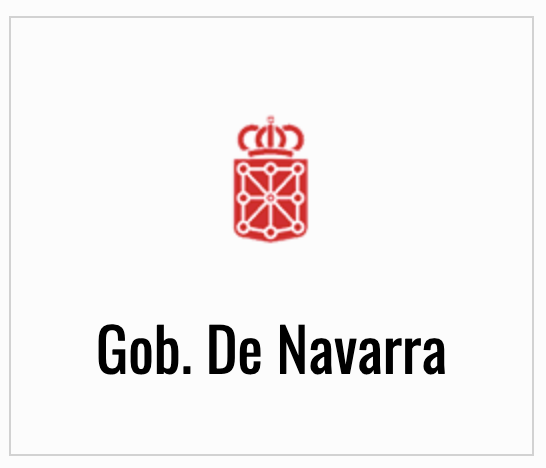
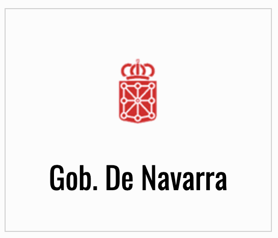
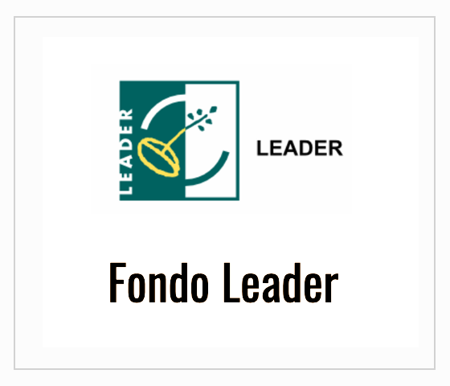
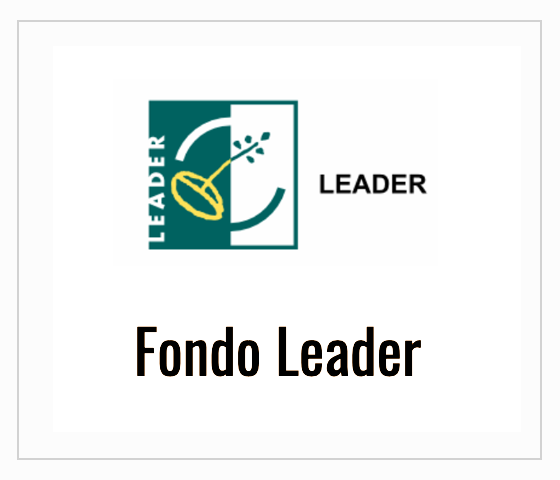

ESPAÑOL
EU
¿QUÉ ES EREMUA?
¿Te imaginas rodar o correr entre hayedos centenarios y por senderos increibles preparados para que únicamente disfrutes? EREMUA y sus bosques son un lugar hecho para sentir la naturaleza a cada paso que das. Aprovecha la oportunidad de correr o pedalear en el escenario de la Nafarro Xtreme y dejate llevar! Un paraiso para la btt y trail te espera en EREMUA.
SIENTE EREMUA
SPONSORS
Este proyecto ha sido gracias al trabajo y colaboración de las siguientes Entidades y Organismos.
 

 
